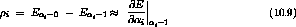
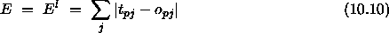
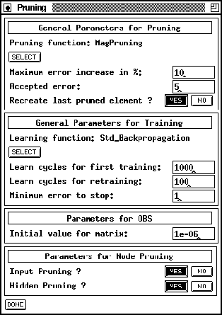
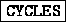

To use one of the pruning algorithms mentioned above, set the learning
function in the control panel (options menu, see section
 ) to PruningFeedForward.
) to PruningFeedForward.
Note: This information is saved with the net. Be sure to check the learning function each time you reload the net.
The pruning algorithms can be customized by changing the parameters in
the pruning panel (see figure  ) which can be invoked by
choosing PRUNING in the main menu. The figure shows the default
values of the parameters.
) which can be invoked by
choosing PRUNING in the main menu. The figure shows the default
values of the parameters.

The first block of the panel controls the pruning, the second the embedded learning epochs and the last two specify parameters for certain pruning algorithms. To save the changes to the parameters and close the pruning panel, press the button

.The current pruning function is shown in the box `` General Parameters for Pruning''. To select a different one, press the button

which pops up a list of the available pruning functions, analogous to the change of the learning function.There are two criterions to stop the pruning: The error after retraining must not exceed
Normally, the state of the net before the last (obviously too
expensive) pruning is restored at the end. You can prevent this by
switching the radio buttons next to `` Recreate last pruned
element'' to  .
.
The second box in the pruning panel (`` General Parameters for Learning'') allows to select the (subordinate) learning function in the same way as the pruning function. Only learning functions for feed-forward-nets appear in the list. You can select the number of epochs for the first training and each retraining separately. The training, however, stops when the absolute error falls short of the `` Minimum error to stop''. This prevents the net from overtraining.
The parameter for OBS in the third box is the initial value of the diagonal elements in the Hesse-Matrix. For the exact meaning of that parameter (to which OBS is said to be not very sensible) see [BH93].
The last box allows the user to choose which kind of neurons should be pruned by the node pruning methods. Input or hidden unit pruning can be selected by two sets of radio buttons.
Learning Parameters of the subordinate learning function have to be
typed in in the control panel, as if the training would be processed by
this function only. The field  in the control panel
has no effect on pruning algorithms. To start pruning, press the
button in the pruning panel and the button
in the control panel
has no effect on pruning algorithms. To start pruning, press the
button in the pruning panel and the button

or respectively in the control panel.
respectively in the control panel.